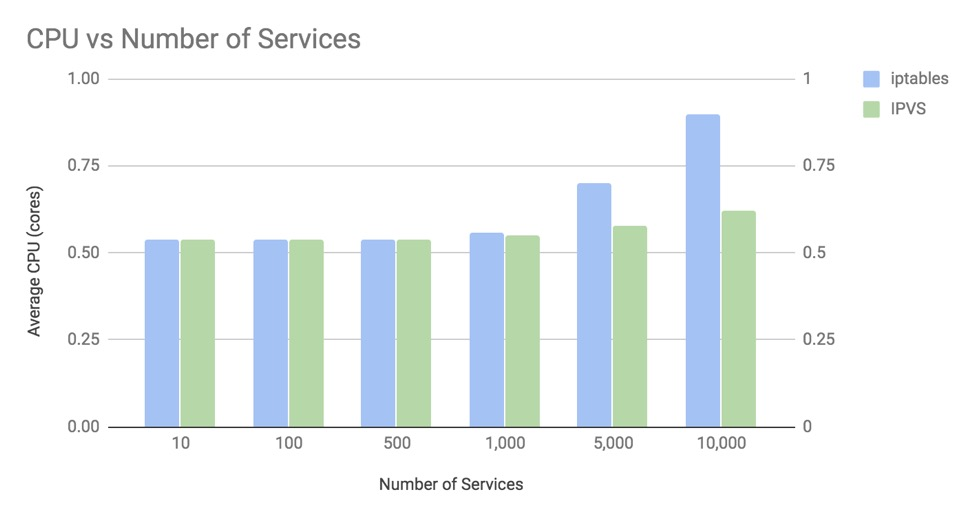

- 00 为什么我们要学习 Kubernetes 技术.md.html
- 01 重新认识 Kubernetes 的核心组件.md.html
- 02 深入理解 Kubernets 的编排对象.md.html
- 03 DevOps 场景下落地 K8s 的困难分析.md.html
- 04 微服务应用场景下落地 K8s 的困难分析.md.html
- 05 解决 K8s 落地难题的方法论提炼.md.html
- 06 练习篇：K8s 核心实践知识掌握.md.html
- 07 容器引擎 containerd 落地实践.md.html
- 08 K8s 集群安装工具 kubeadm 的落地实践.md.html
- 09 南北向流量组件 IPVS 的落地实践.md.html
- 10 东西向流量组件 Calico 的落地实践.md.html
- 11 服务发现 DNS 的落地实践.md.html
- 12 练习篇：K8s 集群配置测验.md.html
- 13 理解对方暴露服务的对象 Ingress 和 Service.md.html
- 14 应用网关 OpenResty 对接 K8s 实践.md.html
- 15 Service 层引流技术实践.md.html
- 16 Cilium 容器网络的落地实践.md.html
- 17 应用流量的优雅无损切换实践.md.html
- 18 练习篇：应用流量无损切换技术测验.md.html
- 19 使用 Rook 构建生产可用存储环境实践.md.html
- 20 有状态应用的默认特性落地分析.md.html
- 21 案例：分布式 MySQL 集群工具 Vitess 实践分析.md.html
- 22 存储对象 PV、PVC、Storage Classes 的管理落地实践.md.html
- 23 K8s 集群中存储对象灾备的落地实践.md.html
- 24 练习篇：K8s 集群配置测验.md.html
09 南北向流量组件 IPVS 的落地实践
我们知道 Kubernetes 工作节点的流量管理都是由 kube-proxy 来管理的。kube-proxy 利用了 iptables 的网络流量转换能力，在整个集群的数据层面创建了一层集群虚拟网络，也就是大家在 Service 对象中会看到的术语 ClusterIP，即集群网络 IP。既然 iptables 已经很完美的支持流量的负载均衡，并能实现南北向流量的反向代理功能，为什么我们还要让用户使用另外一个系统组件 IPVS 来代替它呢？
主要原因还是 iptables 能承载的 Service 对象规模有限，超过 1000 个以上就开始出现性能瓶颈了。目前 Kubernetes 默认推荐代理就是 IPVS 模式，这个推荐方案迫使我们需要开始了解 IPVS 的机制，熟悉它的应用范围和对比 iptables 的优缺点，让我们能有更多的精力放在应用开发上。
一次大规模的 Service 性能评测引入的 IPVS
iptables 一直是 Kubernetes 集群依赖的系统组件，它同时也是 Liinux 的内核模块，一般实践过程中我们都不会感知到它的性能问题。社区中有华为的开发者在 KuberCon 2018 中引入了一个问题：
在超大规模如 10000 个 Service 的场景下，kube-proxy 的南北向流量转发性能还能保持高效吗？
通过测试数据发现，答案是否定的。在 Pod 实例规模达到上万个实例的时候，iptables 就开始对系统性能产生影响了。我们需要知道哪些原因导致 iptables 不能稳定工作。
首先，IPVS 模式 和 iptables 模式同样基于 Netfilter，在生成负载均衡规则的时候，IPVS 是基于哈希表转发流量，iptables 则采用遍历一条一条规则来转发，因为 iptables 匹配规则需要从上到下一条一条规则的匹配，肯定对 CPU 消耗增大并且转发效率随着规则规模的扩大而降低。反观 IPVS 的哈希查表方案，在生成 Service 负载规则后，查表范围有限，所以转发性能上直接秒杀了 iptables 模式。
其次，这里我们要清楚的是，iptables 毕竟是为防火墙模型配置的工具，和专业的负载均衡组件 IPVS 的实现目标不同，这里并不能说 IPVS 就比 iptables 优秀，因为 IPVS 模式启用之后，仅仅只是取代南北向流量的转发，东西向流量的 NAT 转换仍然需要 iptables 来支撑。为了让大家对它们性能对比的影响有一个比较充分的理解，可以看下图：

从图中可以看到，当 Service 对象实例超过 1000 的时候，iptables 和 IPVS 对 CPU 的影响才会产生差异，规模越大影响也越明显。很明显这是因为它们的转发规则的查询方式不同导致了性能的差异。
除了规则匹配的检索优势，IPVS 对比 iptables 还提供了一些更灵活的负载均衡算法特性如：
- rr：轮询调度
- lc：最小连接数
- dh：目标地址散列
- sh：源地址散列
- sed：最短期望延迟
- nq：最少队列
而在 iptables 中我们默认只有轮询调度特性。
此刻让我们来重温一下 IPVS（IP Virtual Server）的定义，它是构建在 Linux Netfilter 模块之上的实现南北向流量负载均衡的 Linux 内核模块。IPVS 支持 4 层地址请求的转发，把 Service 层的唯一虚拟 IP 绑定到容器副本 IP 组上，实现流量负载。所以它天然符合 Kubernetes 对 Service 的定义实现。
IPVS 使用简介
安装 ipvsadm，这是 LVS 的管理工具：
sudo apt-get install -y ipvsadm
创建虚拟服务：
sudo ipvsadm -A -t 100.100.100.100:80 -s rr
使用容器创建 2 个实例：
$ docker run -d -p 8000:8000 --name first -t jwilder/whoami
cd977829ae0c76236a1506c497d5ce1628f1f701f8ed074916b21fc286f3d0d1
$ docker run -d -p 8001:8000 --name second -t jwilder/whoami
5886b1ed7bd4095cb02b32d1642866095e6f4ce1750276bd9fc07e91e2fbc668
查出容器地址：
$ docker inspect -f '{{range .NetworkSettings.Networks}}{{.IPAddress}}{{end}}' first
172.17.0.2
$ docker inspect -f '{{range .NetworkSettings.Networks}}{{.IPAddress}}{{end}}' second
172.17.0.3
$ curl 172.17.0.2:8000
I'm cd977829ae0c
配置 IP 组绑定到虚拟服务 IP 上：
$ sudo ipvsadm -a -t 100.100.100.100:80 -r 172.17.0.2:8000 -m
$ sudo ipvsadm -a -t 100.100.100.100:80 -r 172.17.0.3:8000 -m
$ ipvsadm -l
IP Virtual Server version 1.2.1 (size=4096)
Prot LocalAddress:Port Scheduler Flags
-> RemoteAddress:Port Forward Weight ActiveConn InActConn
TCP 100.100.100.100:http rr
-> 172.17.0.2:8000 Masq 1 0 0
-> 172.17.0.3:8000 Masq 1 0 0
到此，IPVS 的负载配置步骤就给大家演示完了，kube-proxy 也是如此操作 IPVS 的。
kube-proxy 的 IPVS 模式配置参数详解
- --proxy-mode 参数：当你配置为
--proxy-mode=ipvs，立即激活 IPVS NAT 转发模式，实现 POD 端口的流量负载。 - --ipvs-scheduler 参数：修改负载均衡策略，默认为 rr——轮询调度。
- --cleanup-ipvs 参数：启动 IPVS 前清除历史遗留的规则。
- --ipvs-sync-period 和 --ipvs-min-sync-period 参数：配置定期同步规则的周期，例如 5s，必须大于 0。
- --ipvs-exclude-cidrs 参数：过滤自建的 IPVS 规则，让你可以保留之前的负载均衡流量。
IPVS 模式下的例外情况
IPVS 毕竟是为了负载均衡流量使用的，还有一些场景下它是爱莫能助的。比如包过滤、端口回流、SNAT 等需求下还是要依靠 iptables 来完成。另外，还有 4 种情况下 IPVS 模式会回退到 iptables 模式。
- kube-proxy 启动并开启
--masquerade-all=true参数 - kube-proxy 启动时定义了集群网络
- 支持 Loadbalancer 类型的 Service
- 支持 NodePort 类型的 Service
当然，为了优化 iptables 的过多规则生成，kube-proxy 还引入 ipset 工具来减少 iptables 规则。以下表格就是 IPVS 模式下维护的 ipset 规则：
| set name | members | usage |
|---|---|---|
| KUBE-CLUSTER-IP | All Service IP + port | masquerade for cases that masquerade-all=true or clusterCIDR specified |
| KUBE-LOOP-BACK | All Service IP + port + IP | masquerade for resolving hairpin issue |
| KUBE-EXTERNAL-IP | Service External IP + port | masquerade for packets to external IPs |
| KUBE-LOAD-BALANCER | Load Balancer ingress IP + port | masquerade for packets to Load Balancer type service |
| KUBE-LOAD-BALANCER-LOCAL | Load Balancer ingress IP + port with externalTrafficPolicy=local |
accept packets to Load Balancer with externalTrafficPolicy=local |
| KUBE-LOAD-BALANCER-FW | Load Balancer ingress IP + port with loadBalancerSourceRanges |
Drop packets for Load Balancer type Service with loadBalancerSourceRanges specified |
| KUBE-LOAD-BALANCER-SOURCE-CIDR | Load Balancer ingress IP + port + source CIDR | accept packets for Load Balancer type Service with loadBalancerSourceRanges specified |
| KUBE-NODE-PORT-TCP | NodePort type Service TCP port | masquerade for packets to NodePort(TCP) |
| KUBE-NODE-PORT-LOCAL-TCP | NodePort type Service TCP port with externalTrafficPolicy=local |
accept packets to NodePort Service with externalTrafficPolicy=local |
| KUBE-NODE-PORT-UDP | NodePort type Service UDP port | masquerade for packets to NodePort(UDP) |
| KUBE-NODE-PORT-LOCAL-UDP | NodePort type service UDP port with externalTrafficPolicy=local |
accept packets to NodePort Service with externalTrafficPolicy=local |
使用 IPVS 的注意事项
Kubernetes 使用 IPVS 模式可以覆盖大部分场景下的流量负载，但是对于长连接 TCP 请求的水平扩展分流是无能为力的。这是因为 IPVS 并没有能力对 keepalive_requests 做一些限制。一旦你遇到这样的场景，临时解决办法是把连接方式从长连接变为短连接。如设定请求值（比如 1000）之后服务端会在 HTTP 的 Header 头标记 Connection:close，通知客户端处理完当前的请求后关闭连接，新的请求需要重新建立 TCP 连接，所以这个过程中不会出现请求失败，同时又达到了将长连接按需转换为短连接的目的。当然长期的解决之道，你需要在集群前置部署一组 Nginx 或 HAProxy 集群，有效帮助你限制长连接请求的阈值，从而轻松实现流量的弹性扩容。
实践总结
IPVS 模式的引入是社区进行高性能集群测试而引入的优化方案，通过内核已经存在的 IPVS 模块替换掉 iptables 的负载均衡实现，可以说是一次非常成功的最佳实践。因为 IPVS 内置在 Kernel 中，其实 Kernel 的版本对 IPVS 还是有很大影响的，在使用中一定需要注意。当笔者在揣摩着 IPVS 和 iptables 配合使用的纠结中，其实 Linux 社区已经在推进一个新技术 eBPF（柏克莱封包过滤器）技术，准备一举取代 iptables 和 IPVS。如果你没有听说过这个技术，你一定看过这个 Cilium 这个容器网络解决方案，它就是基于 eBPF 实现的：

通过 eBPF 技术，目前已经在高版本的 Kernel 之上实现了流量转发和容器网络互连，期待有一天可以完美替换 iptables 和 IPVS，为我们提供功能更强、性能更好的流量管理组件。